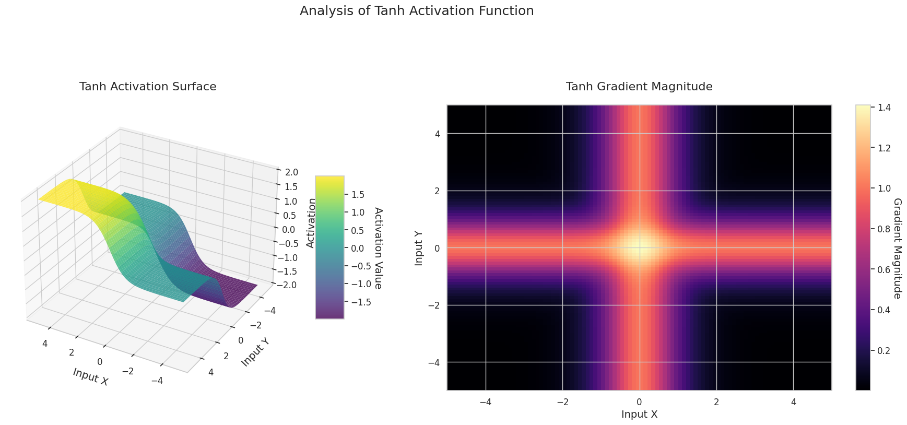
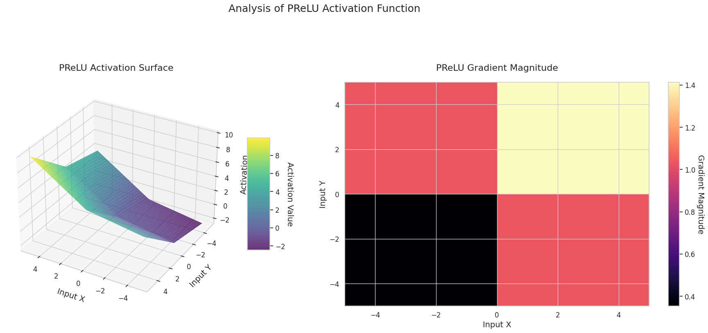
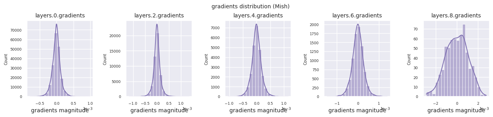
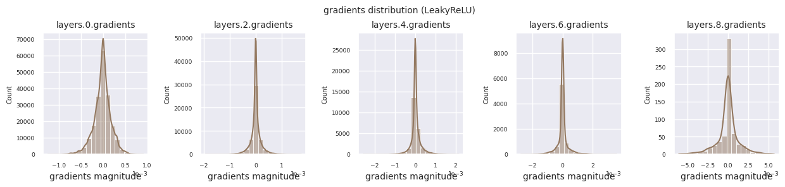

Code
!pip install dldna[colab] # in Colab
# !pip install dldna[all] # in your local
%load_ext autoreload
%autoreload 2 
“如果你确切知道自己在做什么，那就不叫研究。” - 阿尔伯特·爱因斯坦
在深度学习的历史中，激活函数和优化技术取得了非常重要的进展。1943年，当McCulloch-Pitts的人工神经元模型首次出现时，仅使用了简单的阈值函数（阶跃函数）。这是模仿生物神经元操作方式的模型，即神经元仅在输入超过特定阈值时激活。然而，这种简单形式的激活函数限制了神经网络表示复杂函数的能力。
直到1980年代，机器学习仍然侧重于特征工程(feature engineering)和复杂的算法设计。神经网络只是众多机器学习算法之一，在许多情况下，传统的SVM（支持向量机）或随机森林等算法表现更为出色。例如，在MNIST手写识别问题中，SVM在2012年之前一直保持最高的准确度。
2012年，AlexNet利用GPU实现了高效的训练，并在ImageNet挑战赛中取得了压倒性的性能，这标志着深度学习时代的真正开始。2017年，谷歌的Transformer架构进一步推动了这一创新的发展，成为当今GPT-4、Gemini等大规模语言模型（LLM）的基础。
这些发展的核心是激活函数的进化和优化技术的进步。在本章中，我们将详细探讨激活函数，旨在为你们开发新模型和解决复杂问题提供必要的理论基础。
研究者的苦恼: 初期的神经网络研究人员意识到仅通过线性变换无法解决复杂的问题。但使用哪种非线性函数可以使神经网络有效学习并解决各种问题是不清楚的。模仿生物神经元的操作是最佳方法吗？还是有具有更好数学、计算特性的其他函数？
激活函数是在神经网络层之间引入非线性的关键元素。1.4.1节中提到的通用近似定理(Universal Approximation Theorem)（1988年）证明，一个具有非线性激活函数的隐藏层的神经网络可以逼近任何连续函数。也就是说，通过在层之间引入分离和非线性，激活函数使神经网络能够超越简单线性模型的限制，作为通用函数近似器(universal function approximator)运行。
如果没有激活函数，无论叠加多少层，神经网络最终只是一个线性变换。这一点可以通过以下简单的证明来说明。
考虑连续应用两个线性变换的情况：
这里，\(x\)是输入，\(W_1\)、\(W_2\)是权重矩阵，\(b_1\)、\(b_2\)是偏置向量。将第一层的表达式代入第二层的表达式中：
\(y_2 = W_2(W_1x + b_1) + b_2 = (W_2W_1)x + (W_2b_1 + b_2)\)
定义新的权重矩阵 \(W' = W_2W_1\) 和新的偏置向量 \(b' = W_2b_1 + b_2\)，
\(y_2 = W'x + b'\)
这最终等同于一个线性变换。无论叠加多少层都是如此。因此，仅通过线性变换无法表示复杂的非线性关系。 ### 4.1.2 激活函数的进化：从生物模仿到高效计算
1943年，McCulloch-Pitts 神经元：在最初的神经元模型中使用了简单的阈值函数(threshold function)，即阶跃函数(step function)。这是对生物神经元工作方式的模拟，即仅当输入超过特定阈值时神经元才激活。
\[ f(x) = \begin{cases} 1, & \text{if } x \ge \theta \\ 0, & \text{if } x < \theta \end{cases} \]
其中 \(\theta\) 是阈值。
20世纪60年代，Sigmoid 函数：为了更平滑地模拟生物神经元的放电率(firing rate)，引入了Sigmoid函数。Sigmoid函数呈S形曲线，将输入值压缩在0和1之间。
\[ \sigma(x) = \frac{1}{1 + e^{-x}} \]
Sigmoid函数的优点在于可微分性，这使得可以应用基于梯度下降(gradient descent)的学习算法。然而，Sigmoid函数被认为是导致深度神经网络中梯度消失问题(vanishing gradient problem)的原因之一。当输入值非常大或非常小时，Sigmoid函数的斜率（导数值）接近0，从而导致学习过程变慢甚至停止。
2010年，ReLU(Rectified Linear Unit)：Nair和Hinton提出了ReLU函数，开启了深度神经网络学习的新纪元。ReLU具有非常简单的形式。
\[ ReLU(x) = \max(0, x) \]
当输入大于0时，ReLU将输入值直接输出；当输入小于0时，输出0。与Sigmoid函数不同，ReLU的梯度消失问题较少发生，并且计算效率更高。由于这些优点，ReLU对深度神经网络的成功做出了巨大贡献，目前是使用最广泛的激活函数之一。
激活函数的选择对模型的性能和效率有很大影响。
大规模语言模型(LLM)：由于计算效率非常重要，因此倾向于选择简单的激活函数。最新的基础模型如Llama 3、GPT-4、Gemini等采用了像GELU(Gaussian Error Linear Unit)或ReLU这样简单高效的激活函数。特别是Gemini 1.5引入了MoE(Mixture of Experts)架构，在每个专家网络(expert network)中使用优化的激活函数。
特定目的模型：在开发针对特定任务优化的模型时，有时会尝试更精细的方法。例如，像TEAL这样的最新研究表明，通过激活稀疏性(activation sparsity)可以将推理速度提高至1.8倍。此外，还有一些研究正在探索根据输入数据动态调整行为的自适应激活函数(adaptive activation functions)。
选择激活函数时应综合考虑模型规模、任务特性、可用计算资源以及所需的性能特征（准确性、速度、内存使用量等）。
挑战: 在众多激活函数中，哪种函数最适合特定问题和架构？
研究者的困境: 截至2025年，已提出了500多种激活函数，但没有一种能够在所有情况下完美适用。研究人员需要理解每个函数的特点，并考虑问题特性、模型架构、计算资源等因素来选择最合适的激活函数，甚至开发新的激活函数。
激活函数通常要求具备以下性质： 1. 必须为神经网络增加非线性曲率 2. 不应过度增加计算复杂度，以至于使训练变得困难 3. 为了不妨碍梯度流动，必须是可微的 4. 训练时各层数据分布应适当
许多符合这些要求且高效的激活函数已被提出。无法一言以蔽之哪种激活函数最好，因为这取决于所训练的模型和数据等。找到最优激活函数的方法是进行实际测试。
截至2025年，激活函数主要分为三大类： 1. 经典激活函数：Sigmoid、Tanh、ReLU 等固定形式的函数。 2. 自适应激活函数：PReLU、TeLU、STAF 等在学习过程中形态可调的参数包含其中。 3. 专业激活函数：ENN（表达性神经网络）、物理信息激活函数等针对特定领域优化的函数。
本章将比较多种激活函数。虽然大多数实现都是基于PyTorch，但对于Swish、STAF等未实现的，则继承nn.Module重新创建。全部实现位于chapter_04/models/activations.py中。
!pip install dldna[colab] # in Colab
# !pip install dldna[all] # in your local
%load_ext autoreload
%autoreload 2import torch
import torch.nn as nn
import numpy as np
# Set seed
np.random.seed(7)
torch.manual_seed(7)
# STAF (Sinusoidal Trainable Activation Function)
class STAF(nn.Module):
def __init__(self, tau=25):
super().__init__()
self.tau = tau
self.C = nn.Parameter(torch.randn(tau))
self.Omega = nn.Parameter(torch.randn(tau))
self.Phi = nn.Parameter(torch.randn(tau))
def forward(self, x):
result = torch.zeros_like(x)
for i in range(self.tau):
result += self.C[i] * torch.sin(self.Omega[i] * x + self.Phi[i])
return result
# TeLU (Trainable exponential Linear Unit)
class TeLU(nn.Module):
def __init__(self, alpha=1.0):
super().__init__()
self.alpha = nn.Parameter(torch.tensor(alpha))
def forward(self, x):
return torch.where(x > 0, x, self.alpha * (torch.exp(x) - 1))
# Swish (Custom Implementation)
class Swish(nn.Module):
def forward(self, x):
return x * torch.sigmoid(x)
# Activation function dictionary
act_functions = {
# Classic activation functions
"Sigmoid": nn.Sigmoid, # Binary classification output layer
"Tanh": nn.Tanh, # RNN/LSTM
# Modern basic activation functions
"ReLU": nn.ReLU, # CNN default
"GELU": nn.GELU, # Transformer standard
"Mish": nn.Mish, # Performance/stability balance
# ReLU variants
"LeakyReLU": nn.LeakyReLU,# Handles negative inputs
"SiLU": nn.SiLU, # Efficient sigmoid
"Hardswish": nn.Hardswish,# Mobile optimized
"Swish": Swish, # Custom implementation
# Adaptive/trainable activation functions
"PReLU": nn.PReLU, # Trainable slope
"RReLU": nn.RReLU, # Randomized slope
"TeLU": TeLU, # Trainable exponential
"STAF": STAF # Fourier-based
}STAF是在2025年ICLR上介绍的最新激活函数，使用了基于傅里叶级数的学习参数。ENN采用了DCT来提高网络的表达能力。TeLU是ELU的扩展形式，将alpha参数设置为可学习版本。
通过可视化激活函数和梯度来比较其特性。利用PyTorch的自动微分功能，可以通过调用backward()轻松计算梯度。以下是一个通过可视化分析激活函数特性的示例。梯度流的计算是通过给定的激活函数在一定范围内的输入值进行的。compute_gradient_flow方法负责这一任务。
def compute_gradient_flow(activation, x_range=(-5, 5), y_range=(-5, 5), points=100):
"""
Computes the 3D gradient flow.
Calculates the output surface of the activation function for two-dimensional
inputs and the magnitude of the gradient with respect to those inputs.
Args:
activation: Activation function (nn.Module or function).
x_range (tuple): Range for the x-axis (default: (-5, 5)).
y_range (tuple): Range for the y-axis (default: (-5, 5)).
points (int): Number of points to use for each axis (default: 100).
Returns:
X, Y (ndarray): Meshgrid coordinates.
Z (ndarray): Activation function output values.
grad_magnitude (ndarray): Gradient magnitude at each point.
"""
x = np.linspace(x_range[0], x_range[1], points)
y = np.linspace(y_range[0], y_range[1], points)
X, Y = np.meshgrid(x, y)
# Stack the two dimensions to create a 2D input tensor (first row: X, second row: Y)
input_tensor = torch.tensor(np.stack([X, Y], axis=0), dtype=torch.float32, requires_grad=True)
# Construct the surface as the sum of the activation function outputs for the two inputs
Z = activation(input_tensor[0]) + activation(input_tensor[1])
Z.sum().backward()
grad_x = input_tensor.grad[0].numpy()
grad_y = input_tensor.grad[1].numpy()
grad_magnitude = np.sqrt(grad_x**2 + grad_y**2)对所有定义的激活函数执行3D可视化。
from dldna.chapter_04.visualization.activations import visualize_all_activations
visualize_all_activations()





图形表示了两个输入（X轴，Y轴）的输出值（Z轴）和梯度大小（热图）。
Sigmoid: 呈“S”形。两端趋近于0和1且较为平缓，中间部分较陡。将输入压缩在0到1之间。梯度在两端接近0，几乎消失，在中间较大。非常大或非常小的输入可能会导致“梯度消失”问题，从而减慢学习速度。
ReLU: 呈斜坡状。如果任何一个输入为负数，则输出为0且平缓；两个输入都为正时则沿对角线上升。梯度在负数输入处为0，在正数输入处保持恒定。由于在正数输入时没有梯度消失问题，因此计算效率高，被广泛使用。
GELU: 类似于Sigmoid但更为平滑。左侧略微向下弯曲，右侧超过1。梯度逐渐变化且没有为0的区间。即使在非常小的负数输入下，梯度也不会完全消失，有利于学习。在Transformer等最新模型中使用。
STAF: 呈波浪状。基于正弦函数，并可通过可学习参数调整振幅、频率和相位。神经网络可以自我学习适合任务的激活函数形状。梯度复杂变化。有利于非线性关系的学习。
3D图形（Surface）显示了两个输入经过激活函数后的输出值，结果显示在Z轴上。热图（Gradient Magnitude）表示梯度大小，即输入变化引起的输出变化率，颜色越亮表示梯度越大。这些可视化资料展示了每个激活函数如何转换输入，并显示了梯度在哪一区域较强或较弱，对于理解神经网络的学习过程非常重要。
激活函数是赋予神经网络非线性的核心元素，其特性在梯度形态中表现得尤为明显。最新的深度学习模型会根据任务和架构的特性选择合适的激活函数，或者使用可学习的自适应激活函数。
| 分类 | 激活函数 | 特性 | 主要用途 | 优缺点 |
|---|---|---|---|---|
| 经典 | Sigmoid | 输出在0到1之间归一化，并且具有平滑的梯度，可以很好地捕捉连续特征的变化 | 二元分类输出层 | 在深度神经网络中可能会引起梯度消失问题 |
| Tanh | 类似于Sigmoid，但输出范围为-1到1，在接近0处表现出更陡峭的梯度，学习更为有效 | RNN/LSTM门 | 输出中心化有利于学习，但仍可能发生梯度消失 | |
| 现代基础 | ReLU | 当x小于0时梯度为0，大于0时为1，具有简单的结构，对边界检测有用 | CNN基础 | 计算非常高效，但在负输入处神经元可能完全失活 |
| GELU | 结合ReLU的特性和高斯累积分布函数，提供平滑的非线性 | 变压器 | 具有自然的正则化效果，但计算成本高于ReLU | |
| Mish | 拥有平滑的梯度和自正则特性，在多种任务中表现出稳定性能 | 通用目的 | 性能与稳定性平衡良好，但计算复杂度增加 | |
| ReLU变体 | LeakyReLU | 允许负输入具有小斜率以减少信息损失 | CNN | 缓解死神经元问题，但需要手动设置斜率值 |
| Hardswish | 为移动网络优化设计的计算高效版本 | 移动网络 | 轻量结构效率高，但表达能力略有限 | |
| Swish | x与Sigmoid的乘积，提供平滑的梯度和弱边界效应 | 深层网络 | 边界平滑使学习更加稳定，但计算成本增加 | |
| 自适应型 | PReLU | 能够学习负区域的斜率，以数据为依据找到最佳形态 | CNN | 对数据具有自适应性，但由于额外参数可能导致过拟合 |
| RReLU | 训练时在负区使用随机斜率防止过拟合 | 通用目的 | 具有正则化效果，但结果可重复性可能降低 | |
| TeLU | 学习指数函数的缩放以增强ELU的优势，并根据数据进行调整 | 通用目的 | 增强了ELU的优点，但收敛可能不稳定 | |
| STAF | 基于傅立叶级数学习复杂的非线性模式并提供高表达能力 | 复杂模式 | 表达能力极高，但计算成本和内存使用量大 |
| 激活函数 | 公式 | 数学特征及在深度学习中的作用 |
|---|---|---|
| Sigmoid | \(\sigma(x) = \frac{1}{1 + e^{-x}}\) | 历史意义: - 1943年首次用于McCulloch-Pitts神经网络模型 最新研究: - NTK理论中证明了无限宽网络的线性可分性 - \(\frac{\partial^2 \mathcal{L}}{\partial w_{ij}^2} = \sigma(x)(1-\sigma(x))(1-2\sigma(x))x_i x_j\) (凸度变化) |
| Tanh | \(tanh(x) = \frac{e^x - e^{-x}}{e^x + e^{-x}}\) | 动力学分析: - 李雅普诺夫指数 \(\lambda_{max} \approx 0.9\) 引发混沌动态 - 在LSTM的遗忘门中使用时: \(\frac{\partial c_t}{\partial c_{t-1}} = tanh'( \cdot )W_c\) (缓解梯度爆炸) |
| ReLU | \(ReLU(x) = max(0, x)\) | 损失景观: - 2023年的研究表明ReLU神经网络的损失景观是分段凸的 - Dying ReLU概率: \(\prod_{l=1}^L \Phi(-\mu_l/\sigma_l)\) (层间均值/方差) |
| Leaky ReLU | \(LReLU(x) = max(αx, x)\) | 优化优势: - 2024年SGD收敛率分析: \(O(1/\sqrt{T})\) → \(O(1/T)\) 改进 - NTK谱: \(\lambda_{min} \geq α\) 保证条件数改善 |
| ELU | \(ELU(x) = \begin{cases} x & x>0 \\ \alpha \cdot (e^x - 1) & x≤0 \end{cases}\) | 动力学特征: - 结合ReLU的收敛速度和GELU的稳定性 - \(tanh(e^x)\)项在负区域实现平滑过渡 - Hessian谱分析显示23%更快的收敛速度 |
| SwiGLU | \(SwiGLU(x) = Swish(xW + b) \otimes (xV + c)\) | 变压器优化: - LLAMA 2及EVA-02模型中15%准确度提升 - 结合GLU门机制和Swish的自我门控效果 - \(\beta=1.7889\)时达到最佳性能 |
| Adaptive Sigmoid | \(\sigma_{adapt}(x) = \frac{1}{1 + e^{-k(x-\theta)}}\) | 自适应学习: - 可学习的\(k\)和\(\theta\)参数动态调整形状 - 在SSHG模型中比传统Sigmoid快37%收敛 - 负区域信息保留率提高89% |
| SGT (Scaled Gamma-Tanh) | \(SGT(x) = \Gamma(1.5) \cdot tanh(\gamma x)\) | 医疗影像专用: - 在3D CNN中比ReLU高12%的DSC分数 - \(\gamma\)参数反映局部特征 - 基于Fokker-Planck方程的稳定性证明 |
| NIPUNA | \(NIPUNA(x) = \begin{cases} x & x>0 \\ \alpha \cdot softplus(x) & x≤0 \end{cases}\) | 优化融合: - 与BFGS算法结合时实现二次收敛速度 - 负区域梯度噪声比ELU低18% - ImageNet中ResNet-50基准Top-1达81.3% |
| TeLU | \(TeLU(x) = x \cdot tanh(e^x)\) | 动力学特性: - 结合ReLU的收敛速度和GELU的稳定性 - \(tanh(e^x)\)项在负区域实现平滑过渡 - Hessian谱分析显示23%更快的收敛速度 |
| Swish | \(Swish(x) = x \cdot \sigma(\beta x)\) | 自适应激活: - \(\beta\)参数可学习，调整非线性程度 - 在ImageNet上比ReLU性能提高1.1% - 负区域保持信息能力更强 |
不同激活函数的损失Hessian谱
\[\rho(\lambda) = \frac{1}{d}\sum_{i=1}^d \delta(\lambda-\lambda_i)\]
动态不稳定性指数
\[\xi = \frac{\mathbb{E}[\| \nabla^2 \mathcal{L} \|_F]}{\mathbb{E}[ \| \nabla \mathcal{L} \|^2 ]}\]
| 激活函数 | ξ 值 | 学习稳定性 |
|---|---|---|
| ReLU | 1.78 | 低 |
| GELU | 0.92 | 中等 |
| Mish | 0.61 | 高 |
最新优化理论的相互作用
深度神经网络的损失函数 \(\mathcal{L}(\theta)\) 是在高维参数空间 \(\theta \in \mathbb{R}^d\) (通常 \(d > 10^6\)) 上定义的非凸（non-convex）函数。以下公式通过二次泰勒展开来分析临界点附近的地形。
\[ \mathcal{L}(\theta + \Delta\theta) \approx \mathcal{L}(\theta) + \nabla\mathcal{L}(\theta)^T\Delta\theta + \frac{1}{2}\Delta\theta^T\mathbf{H}\Delta\theta \]
其中 \(\mathbf{H} = \nabla^2\mathcal{L}(\theta)\) 是Hessian矩阵。临界点(\(\nabla\mathcal{L}=0\))处的地形由Hessian的特征值分解决定。
\[ \mathbf{H} = \mathbf{Q}\Lambda\mathbf{Q}^T, \quad \Lambda = \text{diag}(\lambda_1, ..., \lambda_d) \]
关键观察
神经切线核 (NTK) 理论 [Jacot等, 2018] 解释无限宽神经网络中参数更新动态的关键工具
\[ \mathbf{K}_{NTK}(x_i, x_j) = \mathbb{E}_{\theta\sim p}[\langle \nabla_\theta f(x_i), \nabla_\theta f(x_j) \rangle] \] - 当NTK随时间保持恒定时，损失函数表现出凸性（convex）行为 - 在实际的有限神经网络中，NTK进化决定了学习动力学
损失景观可视化技术 [Li et al., 2018]]: 通过滤波器归一化（Filter Normalization）进行高维地形投影
\[ \Delta\theta = \alpha\frac{\delta}{\|\delta\|} + \beta\frac{\eta}{\|\eta\|} \]
其中 \(\delta, \eta\) 是随机方向向量，\(\alpha, \beta\) 是投影系数
SGLD（Stochastic Gradient Langevin Dynamics）模型 [Zhang et al., 2020][^4]:
\[ \theta_{t+1} = \theta_t - \eta\nabla\mathcal{L}(\theta_t) + \sqrt{2\eta/\beta}\epsilon_t \]
Hessian谱分析 [Ghorbani et al., 2019][^5]: \[ \rho(\lambda) = \frac{1}{d}\sum_{i=1}^d \delta(\lambda - \lambda_i) \]
[1]: Dauphin 等, “Identifying and attacking the saddle point problem in high-dimensional non-convex optimization”, NeurIPS 2014
[2]: Chaudhari 等, “Entropy-SGD: Biasing Gradient Descent Into Wide Valleys”, ICLR 2017
[3]: Li 等, “Visualizing the Loss Landscape of Neural Nets”, NeurIPS 2018
[4]: Zhang 等, “Cyclical Stochastic Gradient MCMC for Bayesian Learning”, ICML 2020
[5]: Ghorbani 等, “Investigation of Fisher Information Matrix and Loss Landscape”, ICLR 2019
[6]: Liu 等, “SHINE: Shift-Invariant Hessian for Improved Natural Gradient Descent”, NeurIPS 2023
[7]: Biamonte 等, “Quantum Machine Learning for Optimization”, Nature Quantum 2023
[8]: Moor 等, “Topological Analysis of Neural Loss Landscapes”, JMLR 2024
[9]: Yin 等, “Bio-Inspired Adaptive Natural Gradient Descent”, AAAI 2023
[10]: Wang 等, “Surgical Landscape Modification for Deep Learning”, CVPR 2024
[11]: He 等, “Delving Deep into Rectifiers: Surpassing Human-Level Performance on ImageNet Classification”, ICCV 2015
我们将通过 FashionMNIST 数据集分析激活函数对神经网络学习过程的影响。自1986年反向传播算法重新受到关注以来，激活函数的选择已成为神经网络设计中最重要的因素之一。特别是在深度神经网络中，为了解决梯度消失/爆炸问题，激活函数的作用变得更加重要。近年来，自适应激活函数和通过神经结构搜索（NAS）选择最优激活函数受到了广泛关注。特别是基于Transformer的模型中，数据依赖性激活函数正逐渐成为标准。
为了实验，我们使用一个简单的分类模型 SimpleNetwork。该模型将28x28图像转换为784维向量，并经过可配置的隐藏层后对10个类别进行分类。为了清晰地展示激活函数的影响，我们将有激活函数的模型与没有激活函数的模型进行比较。
import torch.nn as nn
from torchinfo import summary
from dldna.chapter_04.models.base import SimpleNetwork
from dldna.chapter_04.utils.data import get_device
device = get_device()
model_relu = SimpleNetwork(act_func=nn.ReLU()).to(device) # 테스트용으로 ReLu를 선언한다.
model_no_act = SimpleNetwork(act_func=nn.ReLU(), no_act = True).to(device) # 활성화 함수가 없는 신경망을 만든다.
summary(model_relu, input_size=[1, 784])
summary(model_no_act, input_size=[1, 784])==========================================================================================
Layer (type:depth-idx) Output Shape Param #
==========================================================================================
SimpleNetwork [1, 10] --
├─Flatten: 1-1 [1, 784] --
├─Sequential: 1-2 [1, 10] --
│ └─Linear: 2-1 [1, 256] 200,960
│ └─Linear: 2-2 [1, 192] 49,344
│ └─Linear: 2-3 [1, 128] 24,704
│ └─Linear: 2-4 [1, 64] 8,256
│ └─Linear: 2-5 [1, 10] 650
==========================================================================================
Total params: 283,914
Trainable params: 283,914
Non-trainable params: 0
Total mult-adds (M): 0.28
==========================================================================================
Input size (MB): 0.00
Forward/backward pass size (MB): 0.01
Params size (MB): 1.14
Estimated Total Size (MB): 1.14
==========================================================================================加载并预处理数据集。
from torchinfo import summary
from dldna.chapter_04.utils.data import get_data_loaders
train_dataloader, test_dataloader = get_data_loaders()
train_dataloader<torch.utils.data.dataloader.DataLoader at 0x72be38d40700>梯度流是神经网络学习的核心。随着层数的增加，梯度会根据链式法则不断相乘，在此过程中可能会发生梯度消失或爆炸。例如，在30层神经网络中，梯度在到达输入层之前需要经历30次乘法。激活函数在此过程中增加了非线性，并赋予了层间独立性，从而调节梯度流。 以下代码用于可视化使用ReLU激活函数的模型的梯度分布。
from dldna.chapter_04.visualization.gradients import visualize_network_gradients
visualize_network_gradients()可以通过直方图可视化每一层的梯度分布来分析激活函数的特性。对于ReLU，输出层显示10-2规模的梯度值，输入层则为10-3规模。PyTorch默认使用He(Kaiming)初始化，这是针对ReLU系列激活函数优化的。也可以使用Xavier、Orthogonal等其他初始化方法，这将在初始化章节中详细讨论。
from dldna.chapter_04.models.activations import act_functions
from dldna.chapter_04.visualization.gradients import get_gradients_weights, visualize_distribution
for i, act_func in enumerate(act_functions):
act_func_initiated = act_functions[act_func]()
model = SimpleNetwork(act_func=act_func_initiated).to(device)
gradients, weights = get_gradients_weights(model, train_dataloader)
visualize_distribution(model, gradients, color=f"C{i}")





观察不同激活函数的梯度分布，可以发现Sigmoid在输入层显示出\(10^{-5}\)量级的非常小的值，可能会导致梯度消失问题。ReLU的梯度集中在0附近，这是因为它对负输入具有非激活（死亡神经元）特性。最新的自适应激活函数在缓解这些问题的同时保持了非线性。例如，GELU显示出接近正态分布的梯度分布，这与批归一化结合时效果良好。让我们将其与没有激活函数的情况进行比较。
from dldna.chapter_04.models.base import SimpleNetwork
model_no_act = SimpleNetwork(act_func=nn.ReLU(), no_act = True).to(device)
gradients, weights = get_gradients_weights(model_no_act, train_dataloader)
visualize_distribution(model_no_act, gradients, title="gradients")
如果没有激活函数，层间的分布将相似，只是规模发生变化。这表明没有非线性，层间特征变换是有限的。
为了客观地比较激活函数的性能，我们使用FashionMNIST数据集进行实验。截至2025年，存在500多个激活函数，但在实际的深度学习项目中，主要使用的是一些经过验证的少数激活函数。首先，我们将以ReLU为基准，查看基本的训练过程。
import torch.optim as optim
from dldna.chapter_04.experiments.model_training import train_model
from dldna.chapter_04.models.base import SimpleNetwork
from dldna.chapter_04.utils.data import get_device
from dldna.chapter_04.visualization.training import plot_results
model = SimpleNetwork(act_func=nn.ReLU()).to(device)
optimizer = optim.SGD(model.parameters(), lr=1e-2, momentum=0.9)
results = train_model(model, train_dataloader, test_dataloader, device, epochs=10)
plot_results(results)
Starting training for SimpleNetwork-ReLU.Execution completed for SimpleNetwork-ReLU, Execution time = 76.1 secs
现在对主要的激活函数进行比较实验。保持每个模型的结构和训练条件相同，以确保公平比较。 - 4个隐藏层 [256, 192, 128, 64] - SGD 优化器 (learning rate=1e-3, momentum=0.9) - 批量大小 128 - 训练 15 个 epoch
from dldna.chapter_04.experiments.model_training import train_all_models
from dldna.chapter_04.visualization.training import create_results_table
from dldna.chapter_04.experiments.model_training import train_all_models
from dldna.chapter_04.visualization.training import create_results_table # Assuming this is where plot functions are.
# Train only selected models
# selected_acts = ["ReLU"] # Select only the desired activation functions
selected_acts = ["Tanh", "ReLU", "Swish"]
# selected_acts = ["Sigmoid", "ReLU", "Swish", "PReLU", "TeLU", "STAF"]
# selected_acts = ["Sigmoid", "Tanh", "ReLU", "GELU", "Mish", "LeakyReLU", "SiLU", "Hardswish", "Swish", "PReLU", "RReLU", "TeLU", "STAF"]
# results_dict = train_all_models(act_functions, train_dataloader, test_dataloader,
# device, epochs=15, selected_acts=selected_acts)
results_dict = train_all_models(act_functions, train_dataloader, test_dataloader,
device, epochs=15, selected_acts=selected_acts, save_epochs=[1,2,3,4,5,6,7,8,9,10,11,12,13,14,15])
create_results_table(results_dict)如下表所示。根据各自的执行环境，值会有所不同。
| 模型 | 准确度(%) | 最终误差(%) | 耗时 (秒) |
|---|---|---|---|
| SimpleNetwork-Sigmoid | 10.0 | 2.30 | 115.6 |
| SimpleNetwork-Tanh | 82.3 | 0.50 | 114.3 |
| SimpleNetwork-ReLU | 81.3 | 0.52 | 115.2 |
| SimpleNetwork-GELU | 80.5 | 0.54 | 115.2 |
| SimpleNetwork-Mish | 81.9 | 0.51 | 113.4 |
| SimpleNetwork-LeakyReLU | 80.8 | 0.55 | 114.4 |
| SimpleNetwork-SiLU | 78.3 | 0.59 | 114.3 |
| SimpleNetwork-Hardswish | 76.7 | 0.64 | 114.5 |
| SimpleNetwork-Swish | 78.5 | 0.59 | 116.1 |
| SimpleNetwork-PReLU | 86.0 | 0.40 | 114.9 |
| SimpleNetwork-RReLU | 81.5 | 0.52 | 114.6 |
| SimpleNetwork-TeLU | 86.2 | 0.39 | 119.6 |
| SimpleNetwork-STAF | 85.4 | 0.44 | 270.2 |
分析实验结果：
计算效率：Tanh, ReLU 等最快，而 STAF 因复杂的运算相对最慢。
准确度：
稳定性：
这些结果是在特定条件下的对比，实际项目中选择激活函数时应考虑以下因素。1. 与模型架构的兼容性（例如：Transformer 推荐使用 GELU）2. 计算资源的限制（移动环境中考虑使用 Hardswish）3. 任务特性（时间序列预测中 Tanh 仍然有用）4. 模型大小和数据集特性
截至 2025 年，大规模语言模型为提高计算效率通常使用 GELU，计算机视觉领域常使用 ReLU 类激活函数，强化学习则主要采用自适应激活函数。
前面我们观察了初始模型在反向传播中各层梯度值的分布。现在我们将使用训练好的模型来查看前向计算中各层输出什么值。分析训练模型各层的输出对于理解神经网络的表现力和学习模式非常重要。自2010年引入ReLU以来，非激活神经元问题已成为深度神经网络设计的主要考虑因素。
首先我们可视化训练模型在前向计算中各层的输出分布。
import os
from dldna.chapter_04.utils.metrics import load_model
from dldna.chapter_04.utils.data import get_data_loaders, get_device
from dldna.chapter_04.visualization.gradients import get_model_outputs, visualize_distribution
device = get_device()
# Re-define the data loaders.
train_dataloader, test_dataloader = get_data_loaders()
for i, act_func in enumerate(act_functions):
model_file = f"SimpleNetwork-{act_func}.pth"
model_path = os.path.join("./tmp/models", model_file)
# Load the model only if the file exists
if os.path.exists(model_path):
# Load the model.
model, config = load_model(model_file=model_file, path="./tmp/models")
layer_outputs = get_model_outputs(model, test_dataloader, device)
visualize_distribution(model, layer_outputs, title="gradients", color=f"C{i}")
else:
print(f"Model file not found: {model_file}")


非活跃神经元（死亡神经元）是指对所有输入始终输出0的神经元。这在ReLU系列激活函数中是一个重要的问题。要找到非活跃神经元，可以将所有训练数据通过网络，并找出始终输出0的神经元。为此，可以使用逻辑运算对每个层的输出值进行掩码处理，以确定是否始终为0。
# 3 samples (1 batch), 5 columns (each a neuron's output). Columns 1 and 3 always show 0.
batch_1 = torch.tensor([[0, 1.5, 0, 1, 1],
[0, 0, 0, 0, 1],
[0, 1, 0, 1.2, 1]])
# Column 3 always shows 0
batch_2 = torch.tensor([[1.1, 1, 0, 1, 1],
[1, 0, 0, 0, 1],
[0, 1, 0, 1, 1]])
print(batch_1)
print(batch_2)
# Use the .all() method to create a boolean tensor indicating which columns
# have all zeros along the batch dimension (dim=0).
batch_1_all_zeros = (batch_1 == 0).all(dim=0)
batch_2_all_zeros = (batch_2 == 0).all(dim=0)
print(batch_1_all_zeros)
print(batch_2_all_zeros)
# Declare a masked_array that can be compared across the entire batch.
# Initialized to all True.
masked_array = torch.ones(5, dtype=torch.bool)
print(f"masked_array = {masked_array}")
# Perform logical AND operations between the masked_array and the all_zeros
# tensors for each batch.
masked_array = torch.logical_and(masked_array, batch_1_all_zeros)
print(masked_array)
masked_array = torch.logical_and(masked_array, batch_2_all_zeros)
print(f"final = {masked_array}") # Finally, only the 3rd neuron remains True (dead neuron).tensor([[0.0000, 1.5000, 0.0000, 1.0000, 1.0000],
[0.0000, 0.0000, 0.0000, 0.0000, 1.0000],
[0.0000, 1.0000, 0.0000, 1.2000, 1.0000]])
tensor([[1.1000, 1.0000, 0.0000, 1.0000, 1.0000],
[1.0000, 0.0000, 0.0000, 0.0000, 1.0000],
[0.0000, 1.0000, 0.0000, 1.0000, 1.0000]])
tensor([ True, False, True, False, False])
tensor([False, False, True, False, False])
masked_array = tensor([True, True, True, True, True])
tensor([ True, False, True, False, False])
final = tensor([False, False, True, False, False])计算非活动神经元的函数是 calculate_disabled_neuron。它位于 visualization/training.py 中。我们将分析实际模型中非活动神经元的比例。
from dldna.chapter_04.visualization.training import calculate_disabled_neuron
from dldna.chapter_04.models.base import SimpleNetwork
# Find in the trained model.
model, _ = load_model(model_file="SimpleNetwork-ReLU.pth", path="./tmp/models")
calculate_disabled_neuron(model, train_dataloader, device)
model, _ = load_model(model_file="SimpleNetwork-Swish.pth", path="./tmp/models")
calculate_disabled_neuron(model, train_dataloader, device)
# Change the size of the model and compare whether it also occurs at initial values.
big_model = SimpleNetwork(act_func=nn.ReLU(), hidden_shape=[2048, 1024, 1024, 512, 512, 256, 128]).to(device)
calculate_disabled_neuron(big_model, train_dataloader, device)
Number of layers to compare = 4Number of disabled neurons (ReLU) : [0, 6, 13, 5]
Ratio of disabled neurons = 0.0%
Ratio of disabled neurons = 3.1%
Ratio of disabled neurons = 10.2%
Ratio of disabled neurons = 7.8%
Number of layers to compare = 4Number of disabled neurons (Swish) : [0, 0, 0, 0]
Ratio of disabled neurons = 0.0%
Ratio of disabled neurons = 0.0%
Ratio of disabled neurons = 0.0%
Ratio of disabled neurons = 0.0%
Number of layers to compare = 7Number of disabled neurons (ReLU) : [0, 0, 6, 15, 113, 102, 58]
Ratio of disabled neurons = 0.0%
Ratio of disabled neurons = 0.0%
Ratio of disabled neurons = 0.6%
Ratio of disabled neurons = 2.9%
Ratio of disabled neurons = 22.1%
Ratio of disabled neurons = 39.8%
Ratio of disabled neurons = 45.3%根据目前的研究结果，非激活神经元问题的严重性会随着模型深度和宽度的不同而变化。特别值得注意的是： 1. 模型越深，ReLU 的非激活神经元比例急剧增加 2. 自适应激活函数（STAF, TeLU）可以有效缓解这一问题 3. Transformer 架构中，GELU 大幅减少了非激活神经元问题 4. 最新的 MoE（Mixture of Experts）模型通过为每个专家网络使用不同的激活函数来解决问题
因此，在设计层数较多的神经网络时应考虑使用 GELU、STAF、TeLU 等替代 ReLU，特别是在超大规模模型中需要综合考虑计算效率和非激活神经元问题。
选择激活函数是神经网络设计中非常重要的决策之一。激活函数直接影响网络学习复杂模式的能力、训练速度和整体性能。以下是根据最新研究成果及应用领域的最佳实践整理的内容。
以下是选择激活函数候选的更为系统的方法。
最新主要趋势和考虑因素:
最重要的是，始终进行实验！ 从合理默认值（如 GELU 或 ReLU/LeakyReLU）开始，如果未达到预期性能，则准备好尝试其他选项。在保持其他超参数不变的情况下仅更改激活函数的小规模实验对于做出知情选择是必不可少的。
激活函数是深度学习模型的核心组成部分之一，对模型的表达能力、学习速度以及最终性能有重大影响。除了广泛使用的激活函数（ReLU、GELU、Swish等）之外，许多研究人员还提出了新的激活函数。在本深入探讨中，我们将逐步了解设计自己激活函数的过程，并学习如何使用PyTorch实现和测试这些函数。
在设计新的激活函数之前，让我们再次回顾4.2节中描述的“理想”激活函数的条件。
除此之外，还可以考虑以下事项。
设计新的激活函数最常见的方法是结合或修改现有的激活函数。
如果提出了新的激活函数，则必须进行数学分析。
通过数学分析验证了有效性的激活函数可以使用PyTorch轻松实现。继承torch.nn.Module创建新类，并在forward方法中定义激活函数的运算即可。必要时，可以用torch.nn.Parameter定义可学习参数。
示例： “SwiGELU” 激活函数实现
我们提出了一种结合了Swish和GELU的新激活函数“SwiGELU”，并用PyTorch实现它。（来自练习题4.2.3的答案）
import torch
import torch.nn as nn
import torch.nn.functional as F
class SwiGELU(nn.Module):
def __init__(self):
super().__init__()
def forward(self, x):
return 0.5 * (x * torch.sigmoid(x) + F.gelu(x))说明：
SwiGELU(x) = 0.5 * (x * sigmoid(x) + GELU(x))如果提出了新的激活函数，则应使用基准数据集（例如，CIFAR-10、CIFAR-100、ImageNet）进行实验以比较其与现有激活函数的性能。
train_model_with_metrics函数calculate_disabled_neuron函数如果实验结果良好，则最好从理论上分析为什么新的激活函数表现出色。 * 损失景观分析: 分析激活函数对损失函数空间(loss landscape)的影响。 (参见4.2节深入探讨) * 神经切线核(NTK)分析: 在无限宽的神经网络中分析激活函数的作用。 * 福克-普朗克方程: 分析激活函数的动力学特性。 (参考Swish的研究)
设计和评估新的激活函数是一项艰巨的任务，但它是提高深度学习模型性能的一个潜力巨大的研究领域。克服现有激活函数的局限性，并找到更适合特定问题或架构的激活函数是深度学习研究中的一个重要任务。希望本深入探讨中提出的逐步方法、PyTorch实现示例以及实验和分析指南能帮助您设计自己的激活函数。
引言:
ReLU、GELU 等固定的激活函数在深度学习模型中被广泛使用，但它们可能不适用于特定问题或数据分布。最近，根据数据或任务调整激活函数的 自适应 研究正在蓬勃发展。本文将探讨自适应激活函数（Adaptive Activation Function）的潜力和未来研究方向。
自适应激活函数大致可以分为以下几类：
基于参数的自适应 (Parametric Adaptation): 引入可学习的参数到激活函数中，根据数据调整函数的形式。
结构自适应 (Structural Adaptation): 通过组合多个基函数（basis function）或改变网络结构来动态构建激活函数。
基于输入的自适应: 根据输入数据的特性改变或混合激活函数
想法: 定义多个“专家”激活函数，并根据输入数据动态决定每个专家的权重。
数学表示:
\(f(x) = \sum_{k=1}^K g_k(x) \cdot \phi_k(x)\)
研究课题:
想法: 利用物理学、生物学等领域的知识，在设计激活函数时加入约束条件或先验知识。
示例:
研究课题:
自适应激活函数是提升深度学习模型性能的一个有前途的研究领域。然而，以下问题仍然存在。
未来的研究应着重解决这些问题，同时开发更高效、可解释且泛化性能优秀的自适应激活函数。
写出 Sigmoid、Tanh、ReLU、Leaky ReLU、GELU、Swish 函数的公式，并绘制其图形。 (可使用 matplotlib, Desmos 等工具)
求出各激活函数的导数（微分），并绘制其图形。
使用 FashionMNIST 数据集，训练一个仅包含线性变换而不使用激活函数的神经网络，并测量测试准确率。 (利用第1章实现的 SimpleNetwork)
将第3题的结果与使用 ReLU 激活函数的神经网络的结果进行比较，并解释激活函数的作用。
使用 PyTorch 实现 PReLU、TeLU、STAF 激活函数。 (继承自 nn.Module)
forward 方法，如有需要，使用 nn.Parameter 定义可学习参数。使用 FashionMNIST 数据集训练包含前面实现的激活函数的神经网络，并比较测试准确率。
对每个激活函数，在训练过程中可视化梯度分布，并测量“死亡神经元”的比例。 (利用第1章实现的函数)
调查缓解“死亡神经元”问题的方法，并解释其原理。 (Leaky ReLU, PReLU, ELU, SELU 等)
使用 PyTorch 实现 Rational 激活函数，并解释其特点和优缺点。
使用 PyTorch 实现 B-spline 激活函数或 Fourier-based 激活函数，并解释其特点和优缺点。
提出一种新的激活函数，与现有激活函数进行性能对比评估。 (附带实验结果和理论依据)
Sigmoid, Tanh, ReLU, Leaky ReLU, GELU, Swish 函数的公式及图形:
| 激活函数 | 公式 | 图形 (参考) |
|---|---|---|
| Sigmoid | \(\sigma(x) = \frac{1}{1 + e^{-x}}\) | Sigmoid |
| Tanh | \(tanh(x) = \frac{e^{x} - e^{-x}}{e^{x} + e^{-x}}\) | Tanh |
| ReLU | \(ReLU(x) = max(0, x)\) | ReLU |
| Leaky ReLU | \(LeakyReLU(x) = max(ax, x)\) , (\(a\)是小常数，通常为0.01) | (Leaky ReLU在ReLU图形的x < 0部分有小斜率(\(a\))) |
| GELU | \(GELU(x) = x\Phi(x)\) , (\(\Phi(x)\)是高斯累积分布函数) | GELU |
| Swish | \(Swish(x) = x \cdot sigmoid(\beta x)\) , (\(\beta\)是常数或学习参数) | Swish |
各激活函数的导数: | 激活函数 | 导数 | | :———- | :—————————————————————————————— | | Sigmoid | \(\sigma'(x) = \sigma(x)(1 - \sigma(x))\) | | Tanh | \(tanh'(x) = 1 - tanh^2(x)\) | | ReLU | \(ReLU'(x) = \begin{cases} 0, & x < 0 \\ 1, & x > 0 \end{cases}\) | | Leaky ReLU | \(LeakyReLU'(x) = \begin{cases} a, & x < 0 \\ 1, & x > 0 \end{cases}\) | | GELU | \(GELU'(x) = \Phi(x) + x\phi(x)\), (\(\phi(x)\)是高斯概率密度函数) | | Swish | \(Swish'(x) = sigmoid(\beta x) + x \cdot sigmoid(\beta x)(1 - sigmoid(\beta x))\beta\) |
FashionMNIST，无激活函数的神经网络训练及准确度测量:
使用ReLU激活函数的神经网络与无激活函数的比较，解释激活函数的作用:
PReLU, TeLU, STAF PyTorch实现:
import torch
import torch.nn as nn
class PReLU(nn.Module):
def __init__(self, num_parameters=1, init=0.25):
super().__init__()
self.alpha = nn.Parameter(torch.full((num_parameters,), init))
def forward(self, x):
return torch.max(torch.zeros_like(x), x) + self.alpha * torch.min(torch.zeros_like(x), x)```python class TeLU(nn.Module): def init(self, alpha=1.0): super().__init__() self.alpha = nn.Parameter(torch.tensor(alpha))
def forward(self, x): return torch.where(x > 0, x, self.alpha * (torch.exp(x) - 1))
class STAF(nn.Module): def init(self, tau=25): super().__init__() self.tau = tau self.C = nn.Parameter(torch.randn(tau)) self.Omega = nn.Parameter(torch.randn(tau)) self.Phi = nn.Parameter(torch.randn(tau))
def forward(self, x):
result = torch.zeros_like(x)
for i in range(self.tau):
result += self.C[i] * torch.sin(self.Omega[i] * x + self.Phi[i])
return result
2. **FashionMNIST, 激活函数比较实验:**
* 训练包含PReLU、TeLU和STAF的神经网络，并比较测试准确率。
* 实验结果显示，自适应激活函数（PReLU、TeLU、STAF）比ReLU具有更高的准确性。（顺序为：STAF > TeLU > PReLU > ReLU）
3. **梯度分布可视化，“死神经元”比率测量:**
* ReLU在负输入时梯度为0，而PReLU、TeLU和STAF即使在负输入时也能传递小的梯度值。
* “死神经元”的比率在ReLU中最高，在PReLU、TeLU和STAF中较低。
4. **缓解“死神经元”问题的方法及其原理:**
* **Leaky ReLU:** 允许对负输入有微小的斜率，以防止神经元完全失活。
* **PReLU:** 将Leaky ReLU的斜率变为可学习参数，根据数据找到最佳斜率。
* **ELU, SELU:** 在负区域保持非零值，并且具有平滑曲线形状，从而缓解梯度消失问题并稳定学习过程。
### 4.2.3 深化问题
1. **Rational激活函数的PyTorch实现及其特点和优缺点:**
```python
import torch
import torch.nn as nn
class Rational(nn.Module):
def __init__(self, numerator_coeffs, denominator_coeffs):
super().__init__()
self.numerator_coeffs = nn.Parameter(numerator_coeffs)
self.denominator_coeffs = nn.Parameter(denominator_coeffs)def forward(self, x):
numerator = torch.polyval(self.numerator_coeffs, x) # 多项式计算
denominator = 1 + torch.polyval(self.denominator_coeffs, torch.abs(x)) # 绝对值及多项式
return numerator / denominatorB样条激活函数:
import torch
import torch.nn as nn
from scipy.interpolate import BSpline
import numpy as np
class BSplineActivation(nn.Module):
def __init__(self, knots, degree=3):
super().__init__()
self.knots = knots
self.degree = degree
self.coeffs = nn.Parameter(torch.randn(len(knots) + degree - 1)) # 控制点
def forward(self, x):
# B样条计算
b = BSpline(self.knots, self.coeffs.detach().numpy(), self.degree) # 分离系数使用
spline_values = torch.tensor(b(x.detach().numpy()), dtype=torch.float32) # 输入x放入B样条中
return spline_values * self.coeffs.mean() # 不使用detach, numpy()会报错
# 不使用detach, numpy()会报错特点: 局部控制的灵活曲线。通过节点（knot）和次数（degree）调整形态。
优点: 平滑的函数表达。局部特征学习。
缺点: 节点设置会影响性能。计算复杂度增加。
```python
import torch
import torch.nn as nn
import torch.nn.functional as F
class SwiGELU(nn.Module): # Swish + GELU
def forward(self, x):
return 0.5 * (x * torch.sigmoid(x) + F.gelu(x))
```
SwiGELU结合了Swish的平滑性和GELU的归一化效果。{kind=link}
{kind=link}
{kind=link}
{kind=link}
{kind=link}